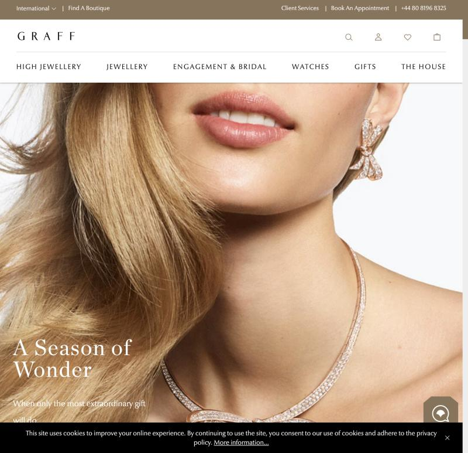
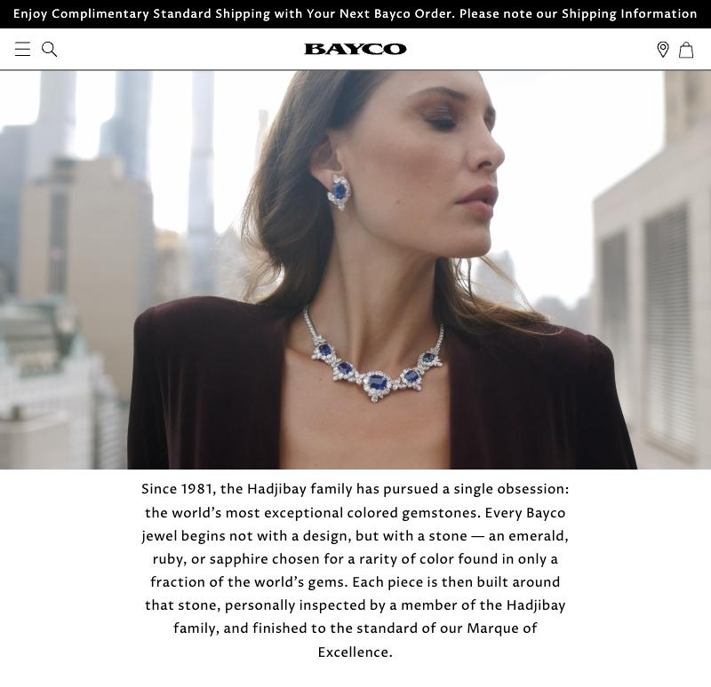
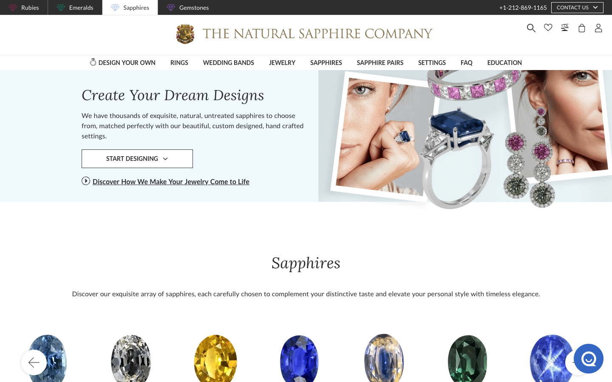
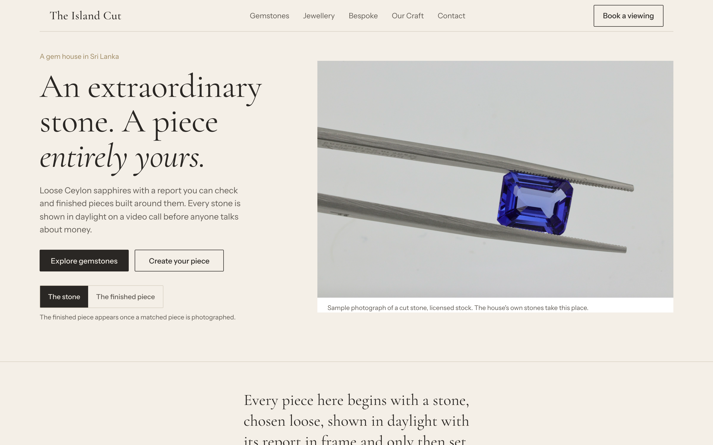
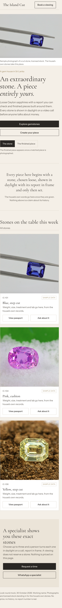

Three real gem houses, one mechanism each, then our own hero on the same page so you can judge them side by side. Nothing here is copied: not a photograph, not a line, not a layout. The pictures in the cards are their pages, for reference only.

House: Graff, London.
Mechanism: the photograph is the whole fold. The headline is small and serif, the page is white, the nav is quiet capitals. The jewel is worn, never floated.
Take: the picture does the talking, the words stay small.
Leave: it needs a model, a stylist and a studio. The trader has none of these yet.

House: Bayco, New York.
Mechanism: a film still, then one centred serif paragraph about the family and the stone. One voice, one paragraph, then the work.
Take: a single centred paragraph where the house says what it believes. Stone first, piece second.
Leave: the family history. We have no history to tell yet and we invent none.

House: The Natural Sapphire Company, New York.
Mechanism: real inventory on white, each stone with an ID, a weight and a report. The buyer compares stones, not stories.
Take: every stone is a record with an ID and a passport. A serious buyer wants the table.
Leave: the shop clutter. Filters, favourites and a hundred stones on one screen.
All three are European or American houses with a photography budget and stock on hand. The trader has neither today. So our page has to look this calm from ONE good stone photograph and labelled sample records and it has to read as a house, not a shop. That is the brief for the mock.
From A, the photograph is the fold and the headline stays small. From B, the house speaks once in a single centred paragraph. From C, the stones on the table are records with an ID and a passport. The ivory paper, the charcoal type and the one champagne accent are ours.
Warm porcelain, charcoal ink, one serif face, one body face. The stone is a licensed stock photograph standing in for the house's own; the page says so under the picture. Three stones on the table are sample data and say so. No price, no history, no report number is real.


Pick the direction to build: A (the piece on a person, needs a model shoot), B (the house speaks once, needs the trader's own words), C (the dealer's table, needs the trader's stones photographed and their records), or the mix shown in the mock. Whichever you pick, the real stones must be photographed before anything goes to the client. Stock stays as a stand in only.
Look round for THE ISLAND CUT, 30 October 2026. References: graff.com, bayco.com, thenaturalsapphirecompany.com, captured 30 October 2026. Stock photographs: Unsplash, credits in look/photos/picked/SOURCES.json.